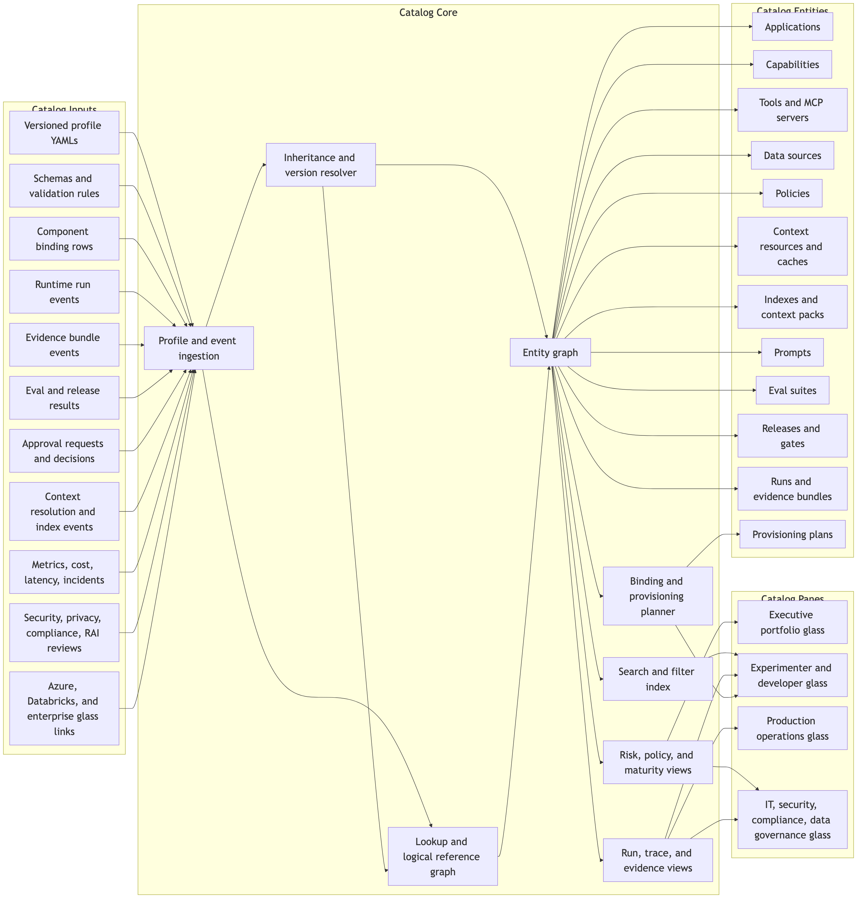
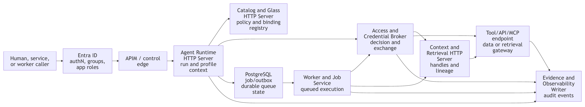
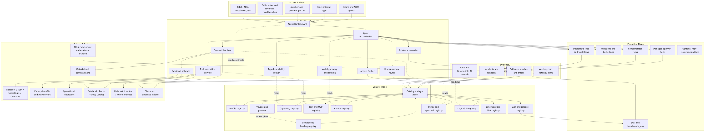
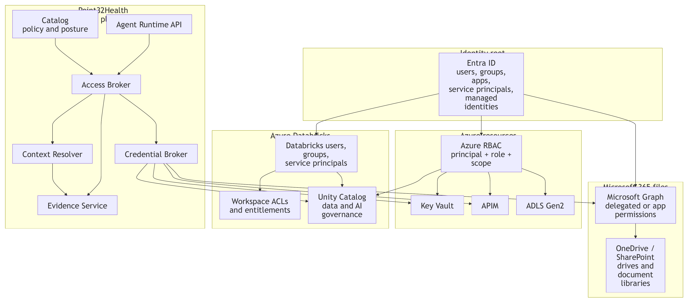

Point32Health Agentic AI
Executive briefing
Rahul Dave (Univ.Ai)
A governed platform approach to move from scattered pilots to safe, reusable enterprise capability.
How do we let adoption move quickly and co-operatively while security, compliance, evidence, humans in the loop, evals, and reuse are managed once?
BBVA escaped pilot purgatory by giving AI demand a managed path
Pre-story: regulated-bank example
The bank saw that employees were already using AI. The safer move was not to freeze demand; it was to channel it into a secure tool, a fast approval path, and a social adoption system that employees wanted to join.
A big-bank context, not a startup exception
BBVA operated across 25 countries, served more than 77 million clients, employed about 125,000 workers, and worked under heavy regulation. Yet leaders compressed risk, legal, and compliance review into two months to avoid unmanaged shadow AI becoming the default.
Source: Garicano, Li & Wu, Messy Jobs, ch. 7, "BBVA: escaping pilot purgatory"; user-provided screenshots.
Managed adoption beats pilot purgatory
Pre-story: the lesson
Adoption, governance, peer learning, human ownership, and evidence moved together.
For Point32Health, the lesson is: do not make governance a brake. Build the platform that lets safe adoption move quickly while evidence, standards, security, compliance, HITL, and evals are managed once.
How to read it: profile declares intent; catalog makes it visible; runtime executes it; evidence proves and improves it.
Source: Garicano, Li & Wu, Messy Jobs, ch. 7, "BBVA: escaping pilot purgatory"; user-provided screenshots.
Managed rollout creates the evidence base for governed reuse
Bank adoption + managed path
BBVA shows why hidden demand needs a trusted path; the managed-adoption lesson is that useful work should happen where evidence, review, and reuse can be attached.
The goal is not a raw transcript archive. The goal is governed company memory: approved run residue that can become reusable assets without losing security, privacy, or owner control.
Sources: conceptspec.md, catalog.md, agent_harnesses.md, evals.md
The 13-document package is now a decision package
Current package map
The planning package has grown from architecture description into a reviewable decision system: target architecture, implementation choices, profile contract, catalog product, security model, eval loop, future-practice stance, and SOW coverage.
Architecture contract
Concept, implementation, profile, catalog, and identity/security documents define what every application must share.
Build sequence
Harness intake and trace capture come first, then trace-fed memory, then the Synthetic Benefits full app proof.
Governance proof
Evidence, evals, release gates, technology choices, future practices, and SOW traceability show how the package will be reviewed.
Sources: readmefirst.md, Deliverables.md, sow_crosscut_traceability.md
Build the intake spine before the first full application proof
Updated build sequence
The first platform proof is not the Synthetic Benefits application. The first proof is that approved agent work can be captured, reviewed in richer surfaces than chat, archived, normalized, evidenced, and turned into governed memory without broad credentials or PHI exposure.
This distinction matters: intake proves managed adoption; Synthetic Benefits proves the full application loop.
Sources: readmefirst.md, implspec.md roadmap, agent_harnesses.md, evals.md
How An LLM Agent Run Works

Point32Health Needs A Platform
Managed platform rationale
Because agentic AI only scales when evidence, reuse, cooperation, security, compliance, HITL, evals, user simplicity, and standards are managed once for every team.
Sources: securityspec.md, future_practices.md, catalog.md
Uniform Standards
Axis 1
The platform gives every agentic application the same contract for purpose, ownership, authority, evidence, evals, release state, and security posture.
Profile contractCatalog visibilityRuntime enforcementEvidence proof layerShared release gates
A governed enterprise platform for agentic AI work
Point32Health agentic architecture
The project is building the operating model and technical substrate for many agentic applications: visible, reusable, secure, auditable, and ready to move from prototype to controlled production.
How to read it: profile declares intent; catalog makes it visible; runtime executes it; evidence proves and improves it.
Sources: conceptspec.md, catalog.md, implspec.md
Agentic work will span the company; each team should not rebuild the control stack
Enterprise need
Local bots create blind spots
Executives and governance teams cannot see the full inventory, maturity, risk, cost, quality, and release posture.
Controls get reimplemented
Identity, data access, evidence, evals, approvals, prompt controls, and incident handling become inconsistent by app.
Learning fails to compound
Useful tools, retrievers, prompts, approval patterns, and evidence services mature locally but do not become reusable assets.
BenefitsClaimsProviderUtilization managementQualityLegalProductOperations
Profiles define the intent, catalog makes it shared, runtime enforces it, and evidence proves and improves it
Operating model
Why this matters
Business teams get speed without bypassing controls. Security and compliance get proof, not promises. Platform teams get reusable learning instead of one-off app telemetry.
A profile turns governance from prose into a reviewable application contract
Profile contract
metadata:
name: synthetic_benefits_navigator_app
lifecycle_status: prototype
inheritance:
parent: enterprise_healthcare_agent_base
surfaces:
allowed_surface_types: [react_app, api, cli, teams, hitl_console]
authority:
default_level: L1_DRAFT
prohibited_actions:
- use_real_phi
- perform_real_writeback
data:
data_classification: internal
access:
access_broker_required: true
ambient_credentials_allowed: false
evidence:
bundle_required: true
evals:
release_gate_required: trueApplication teams declare what is specific. The enterprise base profile supplies inherited controls for authority, access, sandboxing, evidence, evals, observability, release, and compliance.
Governance review can happen before deployment because the contract exists before the run.
Executives review profile decisions, not schema fields
Profile review
The YAML example matters because it turns abstract governance into visible decisions. The executive question is not “what is every field?” It is whether the declared contract is acceptable for the business, data, authority, and release stage.
Can this app exist?
Owner, business purpose, users, surface, value hypothesis, maturity stage, and unresolved risks.
Can it touch this data or tool?
Allowed data class, logical source names, access mode, broker requirement, tool risk, sandbox boundary.
Can it advance?
Required evidence events, human approvals, eval suites, release gates, monitoring, rollback, and signoff.
The base profile carries enterprise defaults. A child profile should make exceptions and application-specific choices obvious enough to approve, reject, or send back.
Source: profilespec.md catalog mapping and Synthetic Benefits overlay
Profiles make the control contract inspectable before an agent runs
Profile examples
Each child profile inherits enterprise defaults, then declares the few facts that change risk: surface, authority, data class, approval triggers, writeback posture, and catalog URLs.
name: benefits_explanation_app surface: call_center_console authority: L1_DRAFT data: phi_pii source: datasource://point32health/benefits/prod/plan_documents approval: formal_determination
name: provider_directory_integrity_app surface: ops_dashboard, batch authority: L2_RECOMMEND data: confidential source: datasource://point32health/providers/prod/directory gate: provider_removal
name: medical_necessity_review_app surface: reviewer_workbench authority: L2_RECOMMEND data: highly_restricted sandbox: deny_by_default approval: adverse_determination
name: claims_exception_resolution_app surface: claims_workbench authority: L2_RECOMMEND data: highly_restricted writeback: approval_required gate: payment_or_denial_change
The profile names logical resources and policies; catalog binding records decide which concrete source, tool, model, prompt, index, or route is approved for the environment and release.
Source: profiles.md application-profile examples
Business purpose, runtime shape, data bindings, and release evidence
Profiles carry multi-purpose information
Here is the Synthetic Benefits profile. It is useful because it is safe, synthetic, and still exercises the real control contract leaders will review for production applications.
metadata: name: synthetic_benefits_navigator_app display_name: Synthetic Benefits Navigator inheritance: parent: enterprise_healthcare_agent_base authority: default_level: L1_DRAFT allowed_actions: [retrieve_context, call_tools, draft_response] prohibited_actions: [use_real_phi, perform_real_writeback]
composition: component_policy: single_lead_agent components: - synthetic_benefits_domain_agent - synthetic_plan_document_retriever - synthetic_eligibility_lookup - synthetic_accumulator_lookup - evidence_bundle_writer - approval_router
data: data_classification: internal logical_reference_required: true sources: - logical_id: datasource://point32health/synthetic/dev/plan_documents access_mode: retrieval - logical_id: datasource://point32health/synthetic/dev/eligibility access_mode: database_readonly context_resources: - index://point32health/synthetic/dev/plan_documents/fulltext?at=build:1
human_in_loop: reviewer_roles: [demo_reviewer, benefits_sme] escalation_triggers: [missing_plan_document, low_confidence] evidence: bundle_required: true required_events: [run_created, access_decision, retrieval, tool_call, approval, eval_result] evals: release_gate_required: true implementation_bindings: prompt_registry_refs: [prompts/synthetic_benefits/domain_agent/v0.1]
This is why a profile is more than metadata: it binds intent, allowed behavior, catalog resources, review gates, evidence, and release readiness into one inspectable contract.
Source: profilespec.md Synthetic Benefits overlay and resolved value view
The catalog is the control product for agentic AI work
Complete visibility
It answers the questions leaders, compliance, IT, and developers need
What exists? Who owns it? Which workflows does it touch? Which data, tools, models, prompts, and capabilities are used? What did it do? What risks remain? Is it safe to advance?
The catalog is both a portfolio lens and an operating control surface.

Current figure from conceptspec.pdf / conceptspec.md
The catalog is operational, but it does not become a shadow admin portal
Operational glass
The catalog should let leaders and teams see posture and request change, but every material action still goes through the owning service, approval workflow, queued job, policy API, or provider driver.
| Action | What the catalog shows | How change happens |
|---|---|---|
| Provision or bind | Selected binding, rejected options, risks, approvals, external glass links | Preview, approval, queued provisioning worker, Azure or Databricks driver |
| Access posture | Identity, policy, data class, TTL stance, access-decision evidence | Access/Credential Broker and provider IAM drivers |
| Context refresh | Snapshot, index build, freshness, lineage, retrieval evidence | Context Resolver plus materialization and indexing workers |
| Release gate | Eval results, human approvals, exceptions, rollback target | Eval/release control API and release workflow |
The catalog records intent, decisions, evidence, and job state. It should not bypass the owning runtime, broker, context, evidence, provisioning, or provider systems.
Source: catalog.md Glass Read/Write Model
Catalog URLs are where controls attach
Catalog URL format
The same pattern names applications, agents, data sources, prompts, tools, evals, releases, runs, review surfaces, archived artifacts, and evidence trails. Applications use these handles; the catalog attaches the policy facts.
Dev examples
app://point32health/member/dev/benefits_explanation
capability://point32health/benefits/dev/domain_agent
datasource://point32health/synthetic/dev/plan_documents
prompt://point32health/benefits/dev/domain_agent/default?at=stage:draft
eval://point32health/benefits/dev/smoke/v1
review://point32health/benefits/dev/run_abc123/spec-reviewProd examples
app://point32health/member/prod/benefits_explanation
datasource://point32health/benefits/prod/plan_documents?at=snapshot:2026-06-01
prompt://point32health/benefits/prod/domain_agent/default?at=stage:approved
release://point32health/benefits/prod/benefits_explanation/2026_06
trace://point32health/benefits/prod/run_abc123/evidence
artifact://point32health/benefits/prod/run_abc123/html/verification-siteURL handle
Stable catalog object the application can pass.
Time-bound permission
Who can use it, for what purpose, scope, and duration.
Runtime binding
Which source, route, index, model, or tool endpoint is approved.
Evidence gate
Eval, review, archive, approval, release, rollback, and recording requirements.
Broker rule: compose the grants needed for the run, then narrow each one by every attached constraint: app/profile, agent, datasource, prompt, tool, eval, release, purpose, scope, expiry, and approval state.
Sources: catalog.md Universal Logical References, securityspec.md Access Envelope
Runtime turns intent into governed execution
Runtime plane
Executives do not need container details, but they do need to know what every run recomputes: access, approved context, model/tool use, human review, and evidence.
Runtime gives speed without ambient authority: agents get scoped handles and approved context, not broad credentials or unmanaged source paths.
Sources: implspec.md runtime/access/context sections, securityspec.md Access Envelope
Executives see the agentic portfolio as a managed operating system, not scattered demos
Leadership visibility| Pane | Primary question | Example signal |
|---|---|---|
| Executive | Is this agentic work valuable and safe to scale? | Maturity, risk, adoption, cost, release posture |
| Operations | What is live, what is failing, and what can be rolled back? | Latency, failures, incidents, kill switches |
| Security and compliance | Is this allowed to run with this data and authority? | Policy, identity, PHI, evidence, signoff |
Anatomy Of An AI Application

Evidence Traces
Axis 2
Runs, access decisions, retrieved context, model/tool calls, approvals, evals, incidents, and release gates become a durable trail that leaders, operators, security, compliance, and auditors can inspect.
AuditabilityDebuggingReplayRegression testsRelease signoff
Every important run should leave a durable, navigable evidence trail
AuditabilityEvidence supports audit, compliance, debugging, replay, regression tests, release gates, prompt optimization, RL-style learning, and executive visibility into risk and quality.
Evals turn captured work into release decisions
Trace-based evaluation
Evaluation is not a detached scorecard. It is the loop that turns real traces, human critique, known risks, and release candidates into a visible pass/fail decision.
The first eval proof should test harness intake itself before Synthetic Benefits carries the first application-specific eval suite.
Source: evals.md release gates and prototype path
Reuse And Cooperation
Axis 3
The architecture lets teams share capabilities, context packs, approval patterns, evals, evidence services, and integration bindings while still preserving local workflow ownership.
Shared capabilitiesTyped contractsContext packsOwner-visible reuse
Application teams focus on workflows while shared services handle enterprise obligations
Delivery benefit
Reusable runtime
Run creation, durable state, tool calls, model routing, approvals, broker handoffs, and kill switches become common services.
Reusable governance
Profile inheritance carries enterprise controls into each application without making teams restate every rule.
Reusable integration
Catalog bindings connect profile intent to Azure, Databricks, APIM, Graph, Search, Key Vault, and enterprise APIs.
The platform should lower delivery friction and raise the control baseline at the same time.
Useful app-local work can graduate into shared enterprise capabilities
ReuseEvidence writerApproval routerRetrieval with provenanceDocument understandingProvider lookupClaims explanationContext resolver
Security And Compliance
Axis 4
The security design composes Entra, RBAC, Databricks, profile policy, purpose, data classification, approval state, environment, release state, and evidence before access is granted.
Run-scoped identityShort-lived handlesPrompt/tool guardrailsCompliance signoff
Entra ID and RBAC remain foundational, but agent access is decided per run
Security benefitThe platform adds profile-aware access policy above identity and RBAC facts, so a user or service account cannot silently hand broad authority to an agent.
The broker gives agents bounded handles, not reusable enterprise credentials
Credential boundary

Current figure from securityspec.pdf / securityspec.md
Short lived
Tokens, handles, snapshots, or sessions expire and can be revoked.
Purpose bound
Access is tied to profile, task, source, operation, and release state.
Server side
Secrets remain in broker, Key Vault, APIM, managed identity, or source systems.
Audited
Every decision and exchange becomes evidence for review.
Healthcare-specific risks are designed into the platform rather than patched onto apps
Healthcare guardrails
Data minimization
Retrieve the minimum necessary context at the approved redaction level before model calls.
Prompt and tool injection
Treat retrieved content as data, gate tools, label source trust, and test injection/exfiltration paths.
Human review
High-impact clinical, financial, adverse, external, or writeback actions require role-qualified approval.
| Risk | Platform control |
|---|---|
| PHI/PII overexposure | Data classification, minimum necessary retrieval, redaction, evidence retention policy |
| Unauthorized tool use | Tool registry, APIM/MCP gateway, Access Broker, approval gates |
| Unsafe promotion | Evals, red-team tests, release gates, security signoff, rollback path |
A release is not production-ready until evidence, owners, exceptions, and rollback are visible
Compliance and signoff
Evidence completeness
Profile, release, access, credential exchange, guardrails, evals, approvals, and exceptions must be present.
Required reviewers
Product, data, IT/IAM, security, compliance, privacy, RAI, operations, and accountable executives approve bounded areas.
Fail-closed gate
Missing evidence, unresolved high-risk findings, unclear PHI reuse, or unowned exceptions block promotion.
Executive approval is additive: it accepts enterprise accountability, but it does not override missing data, security, compliance, tool, or production approval.
Shared release gates mean every app follows the same controlled path to production
Dev to production
A release gate is the common promotion checkpoint between environments. It lets different teams move quickly, but only after the catalog shows the right owner, bindings, evals, approvals, evidence, monitoring, and rollback plan for that stage.
Dev
Prototype with synthetic or non-production paths. Prove the profile, logical IDs, baseline evals, and evidence events work.
/dev/
Staging
Exercise production-like bindings, reviewers, guardrails, runbooks, and failure modes before a wider audience sees the workflow.
/staging/
Production
Run only the approved release version, with catalog-visible owners, access, monitoring, incident response, and rollback.
/prod/
The gate is shared because the platform owns the promotion rule once; each application supplies its own evidence, approvals, and environment-specific bindings.
Sources: catalog.md release page, governance workflows, maturity states
HITL And Easy Evals
Axis 5
The platform separates draft work from high-impact action, captures reviewer decisions as evidence, and turns known failures into reusable eval and release-gate assets.
Approval routingGolden setsRegression casesSafety testsReviewer feedback
High-impact actions stay human-approved while routine quality checks get easier to reuse
HITL and evals
Human-in-the-loop
Clinical, financial, adverse-action, external communication, source-system writeback, and material exception paths route to role-qualified reviewers before action.
Reviewer decisions become evidence, not informal comments lost outside the system.
Evaluation loop
Golden sets, citation checks, prompt/tool-injection tests, PHI leakage checks, red-team scans, and reviewer feedback become reusable release-gate material.
Teams can improve quality without inventing a new eval harness for every app.
Review surfaces turn agent work into governed artifacts
Richer human feedback
When chat is too narrow, the catalog gives reviewers a real surface: a spec with inline comments, an output draft with citations, a static HTML explanation, a browser-test replay, or a temporary live app.
Catalog endpoint
Humans open app://..., not raw local ports or unmanaged share links.
HITL packet
Runtime controls reviewer actions, TTLs, kill switches, and agent messages.
Feedback evidence
Comments, suggestions, decisions, and accepted edits become reviewevent://....
Artifact archive
Source, rendered view, feedback, screenshot, and logs stay under artifact://....
Sources: catalog.md, implspec.md Section 13, securityspec.md review-surface controls
User Simplicity And Future Readiness
Axis 6
Stable profiles, catalog records, runtime APIs, evidence bundles, and release gates let Point32Health adopt new agent frameworks, memory, subagents, optimization, and RL patterns without changing the business-facing contract.
No technical burden on usersSwappable implementationsFuture practicesControlled adoption
New agent patterns should be adopted through experiments, not one-off production shortcuts
Future work
Subagents
Use bounded delegation, typed capabilities, context packets, budget limits, and parent/child evidence.
Memory
Start with hybrid retrieval, context packs, key-file packs, and trace-derived memory only after redaction and approval.
Optimization
Run prompt/program optimization and RL-style learning offline against approved benchmarks and release gates.
Compaction
Treat summaries as derivative artifacts with source links, validation, warnings, retention, and reuse policy.
Managed platforms
Use Azure, Databricks, OpenAI, or future services where they fit, then mirror traces into the catalog.
Governed feedback
Trace reuse, eval corpora, optimizer inputs, and learning datasets need classification and approval.
Source: future_practices.md
The default implementation stack is Azure where Azure is the enterprise control point
Software choices
The software plan turns the platform model into concrete defaults: use Azure for enterprise application surfaces, identity, API control, managed hosting, monitoring, search, owned operational state, and model governance where it fits.
| Kind | Software to use | Azure? |
|---|---|---|
| Catalog and profile registry | Azure App Service or equivalent, PostgreSQL or Azure SQL, Entra ID, and imports from Databricks. | Yes |
| Agent Runtime API | Point32Health Runtime API on App Service or Functions behind APIM, with canonical evidence hooks. | Yes |
| Managed agents and LLMs | Azure AI Foundry Agent Service, Foundry model catalog, and Azure OpenAI as the Azure-managed default. | Yes |
| Model, tool, API, and MCP gateway | Azure API Management AI gateway, API Center, Azure Functions, and App Service MCP endpoints. | Yes |
| Identity, access, and secrets | Entra ID, managed identities, Azure RBAC, Key Vault, and APIM credential manager. | Yes |
| Enterprise retrieval | Azure AI Search for enterprise application retrieval, vector, hybrid, and full-text search. | Yes |
| Hosting, jobs, and sandboxes | App Service, Functions, Logic Apps, and Container Apps for APIs, integration jobs, and selected sandbox jobs. | Yes |
| Evidence, traces, and artifacts | PostgreSQL or Azure SQL for metadata, ADLS or Blob for artifacts, Azure Monitor and App Insights for operations. | Yes |
Source: implspec.md Section 23 software-choice appendix
Databricks and external tools are deliberate exceptions, not the default control plane
Software choices
Use Databricks where the work is lakehouse-native or data/ML-centered. Use external tools only as pressure valves after native Azure and Databricks options are mapped.
| Kind | Software to use | Azure? |
|---|---|---|
| Lakehouse governance | Databricks Unity Catalog and Unity AI Gateway for Databricks data, model, MCP, and usage governance. | No |
| Data-side tools and MCP | Databricks MCP, Genie, SQL, notebooks, and custom Databricks-side tools where governed data lives there. | No |
| Data and ML pipelines | Databricks Jobs, Workflows, Lakeflow, Delta, and Runtime API handoff at the agent boundary. | No |
| Data-side model serving and evals | Databricks Model Serving, MLflow 3, Delta, and Unity Catalog for classifiers, experiments, and data-side agents. | No |
| Delta-native retrieval and analytics | Databricks AI Search plus Delta trace, evidence, eval, and cost mirrors for lakehouse analysis. | No |
| Prompt, eval, and trace pressure valves | LangSmith, Braintrust, Arize Phoenix, OpenTelemetry collectors, or similar only for validated gaps. | No |
| Workflow pressure valves | Temporal, Prefect, Dagster, or Airflow only when Azure and Databricks basics are not enough. | No |
| Specialized parsers and AI security | Docling, LlamaParse, HiddenLayer, Lakera, Protect AI, or similar after document/security gap review. | No |
Source: implspec.md Section 23 software-choice appendix
Synthetic Benefits is the first full application proof, after intake works
Prototype proof
Synthetic Benefits remains the right first full application MVP because it is safe, synthetic, and still exercises the real control contract. It should come after the intake spine can already name, capture, normalize, and evidence managed agent work.
Prototype question
Is physical therapy covered for this synthetic member, and what would they likely pay if they use this provider?
Synthetic plan docsEligibility tableAccumulator tableProvider directoryBenefit config
The proof value is not the benefits question itself. The proof value is that the full governed loop works before real PHI or source-system writeback.
Sources: prototype.md, profilespec.md, catalog.md, evals.md
The roadmap starts with managed adoption, not production automation
Updated roadmap
Maturity states stay explicit in the catalog: proposed, design, prototype, shadow, assistive, supervised action, limited automation, and scaled automation.
Sources: readmefirst.md, implspec.md roadmap, catalog.md maturity states
The next decisions are about ownership, gates, and sequence
Executive alignment
The technology stack is now specific enough to review. The open executive questions are mostly operating-model questions: who owns the shared control product, which gates are mandatory, and which use cases move after the intake proof.
Confirm the catalog as the control product
Inventory, approvals, release state, evidence, security posture, and external glass links should converge there.
Name accountable owners
Business, platform, security, compliance, data governance, operations, and reusable capability ownership must be visible.
Approve the staged gates
Harness intake, Synthetic Benefits, controlled pilots, production hardening, and AI-native expansion each need different evidence.
Choose the first pilot lane
After Synthetic Benefits proves the full loop, choose DAIS or a payer pilot based on value, risk, data readiness, and reviewer capacity.
The executive value is fast managed adoption, reusable platform capability, and stronger security/compliance posture, not simply more AI usage.
A River-like operating model turns managed work into governed memory
AI-native operating model
The long-term goal is not a chatbot on every screen. It is work that becomes capturable, searchable, reusable, and governed inside the right tenant-like boundary.
Point32Health becomes AI-native when the next team can start from approved prior work without flattening privacy, security, compliance, or ownership boundaries.
Sources: riverness.md, agent_harnesses.md, catalog.md, evals.md
Five surrounding platform planes and the governed runtime
Appendix figure

Current figure from conceptspec.pdf
Logical references keep context stable while backing stores change
Appendix figure

Catalog-owned logical IDs such as policy://, datasource://, index://, and contextpack:// resolve into approved snapshots, caches, indexes, retrieval handles, and evidence.
Identity and authorization layers compose under the broker
Appendix figure

Current figure from identity_auth_layers.pdf
Example profile excerpt: Synthetic Benefits Navigator
Appendix YAML
metadata:
name: synthetic_benefits_navigator_app
lifecycle_status: prototype
inheritance:
parent: enterprise_healthcare_agent_base
business:
domain: member
business_metrics: [answer_accuracy, citation_fidelity, approval_flow_success, eval_pass_rate]
surfaces:
allowed_surface_types: [react_app, api, cli, teams, hitl_console]
authority:
default_level: L1_DRAFT
prohibited_actions: [use_real_phi, use_real_member_data, perform_real_writeback]
data:
data_classification: internal
sources:
- name: synthetic_plan_documents
logical_id: datasource://point32health/synthetic/dev/plan_documents
- name: synthetic_accumulators
logical_id: datasource://point32health/synthetic/dev/accumulators
evidence:
required_events: [run_created, profile_resolved, access_decision, context_resolved,
retrieval, tool_call, model_call, output_artifact, approval, eval_result]Excerpted from profiles.md and profilespec.md
Azure-first implementation with Databricks where data and ML live
Appendix figure

The implementation can evolve. The durable contract is profile-bound runtime, catalog visibility, brokered access, logical context, evidence, evals, and release gates.
Old Slides For Review
Second appendix
The following slides were removed from the main executive flow during the 13-document refresh. They are preserved here so reviewers can pull back useful language, examples, or layout patterns before deletion.
Retired from main flowAvailable for reuseSafe to delete after review
Old Slide: A profile covers the decisions that make an agentic application safe to run
Old slide
The profile is not just an owner line or a YAML example. It is the enterprise contract for purpose, users, authority, data, runtime behavior, controls, release posture, and operating accountability.
Who and why
metadata, business, users, maturity, risks.
Where it appears
catalog, surfaces, owner views, portfolio views, observability views.
What it may do
authority, data, access, tools, composition.
How it runs
execution, sandbox, brokered credentials, context handles.
How it is checked
human_in_loop, evidence, evals, observability.
How it goes live
security, regulatory, release, operations, implementation_bindings.
The base profile supplies inherited enterprise defaults; each child profile declares the application-specific choices and exceptions leaders can review.
Source: profilespec.md base profile walkthrough and catalog mapping
Old Slide: Synthetic Benefits proves the full loop without real PHI or source-system writeback
Old slide
Prototype question
Is physical therapy covered for this synthetic member, and what would they likely pay if they use this provider?
Synthetic plan docsEligibility tableAccumulator tableProvider directoryBenefit config
Old Slide: Start safe, then move through controlled maturity gates
Old slide
Maturity states stay explicit in the catalog: idea, design, prototype, shadow, assistive, supervised action, limited automation, scaled automation.
Old Slide: The next decisions are operating-model decisions, not only technology decisions
Old slide
Confirm catalog-centered visibility
Agentic work should be inventoried, governed, operated, and reviewed through a shared catalog.
Assign accountable owners
Business, platform, security, compliance, data governance, and operations ownership must be visible per app and capability.
Approve staged maturity gates
Prototype, shadow, assistive, supervised, and automation stages need evidence and release criteria.
Choose the post-prototype pilot path
Use Synthetic Benefits to prove the contract, then select DAIS or a payer pilot based on value, risk, and readiness.
The executive value is complete visibility, faster safe delivery, reusable capabilities, and a stronger security/compliance posture for agentic AI.
Old Slide: Riverbed makes managed work compound into an AI-native organization
Old slide
The platform is not only a safer way to run AI projects. It is the substrate that lets managed work become reusable organizational memory.
That is the Riverbed goal: Point32Health becomes AI-native when every approved run can leave behind something the next team can safely trust, reuse, and improve.
Sources: Shopify Engineering, “Under the River”; riverness.md, agent_harnesses.md, catalog.md, evals.md